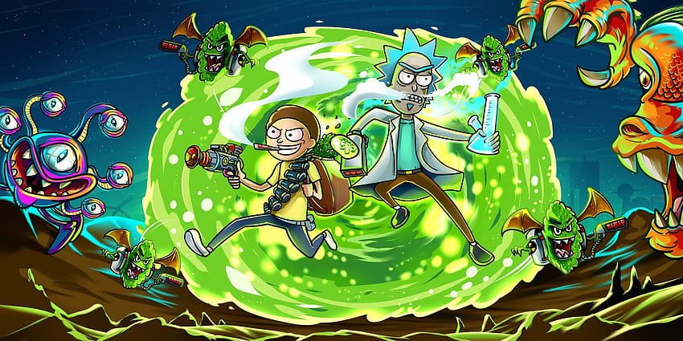
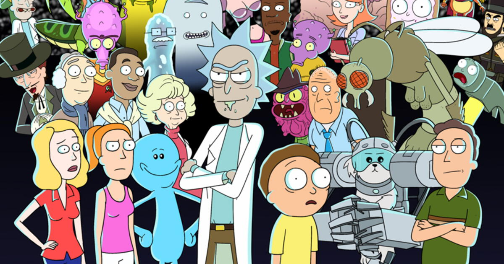
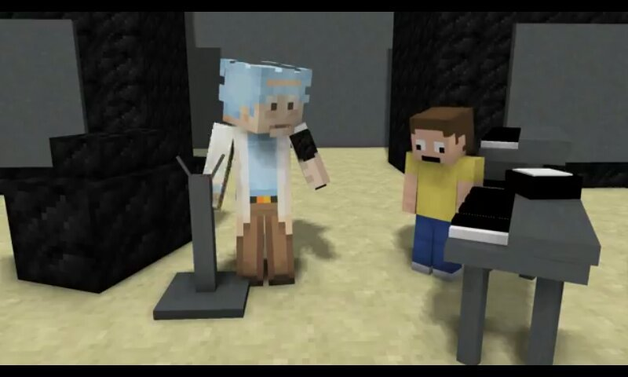

Historia de "Rick y Morty"
"Rick y Morty" es una serie animada que sigue las extraordinarias y a menudo peligrosas aventuras de Rick Sánchez, un científico excéntrico y su nieto Morty Smith.
Juntos, viajan a través de dimensiones, mundos paralelos y realidades alternativas, enfrentándose a situaciones increíbles y desafiantes mientras exploran la ciencia ficción, el humor y temas filosóficos.

Sinopsis de "Rick y Morty"
La serie sigue las desventuras de Rick y Morty mientras se embarcan en viajes a través del espacio, el tiempo y múltiples realidades.
Cada episodio presenta una nueva y emocionante aventura que a menudo desafía la lógica y lleva a los personajes a situaciones extremas.
Protagonistas de "Rick y Morty"
La serie presenta a Rick, un científico excéntrico y alcohólico, y a su nieto Morty, un adolescente no muy seguro de sí mismo.
Además, están los miembros de la familia de Morty: Summer, su hermana, Beth, su madre, y Jerry, su padre, cada uno con sus propias peculiaridades y roles en las aventuras.
Influencia en la Cultura Popular
"Rick y Morty" ha ganado una gran base de fanáticos y ha influenciado la cultura pop con sus referencias, memes y frases icónicas.
La serie ha generado discusiones en línea, teorías de fanáticos y ha dejado una marca duradera en la cultura contemporánea.
